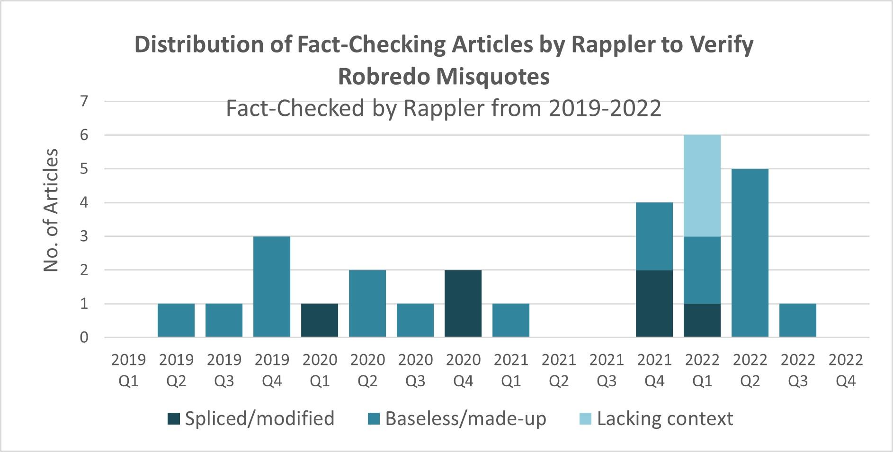

OVERVIEW
Motivation
Vice President Leni Robredo received the most disinformation campaign attacks among the presidential candidates, based on the findings of Tsek.ph, a collaborative fact-checking initiative of the academe and media (Rubio, 2022). From 2019 to 2022, Rappler was able to verify the falsity of 28 statements attributed to Robredo (summary list), 68% of which were baseless and made-up.
Distribution of fact-checking articles by Rappler according to type of misquote attributed to Leni Robredo
| Type | Description | N | % |
|---|---|---|---|
| Spliced/modified | Original statement exists but spliced or modified; statement spliced and combined with another statement | 6 | 21% |
| Baseless/made-up | No statement exists; Statement on original graphic card from a reputable source replaced with a false statement | 19 | 68% |
| Lacking context | Part of related statements taken, creating a different meaning | 3 | 11% |
| Total No. of Fact-Checking Articles (by Rappler) | 28 |
Over the 3-year period, the number of validated misquotes increased, as shown by the graph below. Of the 28 fact-checked statements, 24 were originally posted and shared in Facebook.

Facebook vs Twitter. Facebook is the favored platform of 45.9% of the 84.45 million social media users in the Philippines (Kemp, 2023). Only 3.9% of those users consider Twitter their favorite. In terms of web traffic on third-party websites generated from clicks on published links, 89.47% is accounted to Facebook and 2.98% to Twitter. Comparative total potential advertisement reach is 80.3 million and 11.8 million for Facebook and Twitter, respectively.
A study by the Pew Research Center in the United States showed that those in the highest income bracket and those with at least a college education lean toward Twitter use (compared to the lowest income bracket and to those with lower educational attainment). Whereas about 70% of both the highest and lowest income brackets use Facebook, only 12% of the lowest income bracket use Twitter compared to 34% of the highest income bracket. Likewise, for Facebook, there is just a 9% usage gap between people with high school as highest education attainment and those with college education (64% vs 73%). For Twitter, it is 14% and 33% (Auxier and Anderson, 2021). Although a similar data set does not exist for the Philippines, it can be estimated that demographics similarly affect social media use in the country.
Considering the difference in volume of transactions and the effect of demographics, it is possible that popular trends in Facebook may not carry on to Twitter. As such, this study aims to verify if the increase in false statements attributed to Leni Robredo created a similar increase in the volume of related tweets over the same period.
Research Question
Did the 2022 election affect
(1) the number of tweets with quotes misattributed to Robredo and
(2) the engagement towards the misattributed quotes?
Hypothesis:
The number of tweets with quotes misattributed to Robredo, and the tweet engagement increased as the 2022 election came closer.
Null Hypothesis:
The 2022 election did not increase the number of tweets with quotes misattributed to Robredo, and the tweet engagement.
Action Plan
Analyze the posting time and date & engagement (favorites, replies, retweets, quote retweets) of the quotes misattributed to Robredo.
References
Kemp, S. (2023, February 9). Digital 2023: The Philippines. DataReportal. https://datareportal.com/reports/digital-2023-philippines
Auxier, B., & Anderson, M. (2021, April 7). Social Media Use in 2021. Pew Research Center. https://www.pewresearch.org/internet/2021/04/07/social-media-use-in-2021/?utm_source=AdaptiveMailer&utm_medium=email&utm_campaign=21-04-07%20Social%20Media%20Report%20Immediate%20Release&org=982&lvl=100&ite=8299&lea=1790136&ctr=0&par=1&trk=
Rubio, P. (2022, February 3). Robredo biggest fake news victim: fact-check group. Tsek.ph. https://www.tsek.ph/robredo-biggest-fake-news-victim-fact-check-group/